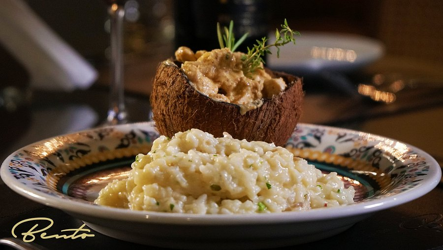

Anápolis
Anápolis é uma cidade localizada no estado de Goiás, no coração do Brasil, e desempenha um papel importante como centro comercial e logístico da região Centro-Oeste. Sua proximidade com Brasília, a capital federal, faz dela uma cidade estratégica, que também atrai turistas interessados em explorar a cultura local, a gastronomia e as belezas naturais. Além disso, Anápolis é conhecida por sua história, que remonta à época da colonização, e por ser um centro de eventos e festivais regionais.
Embora não seja uma grande capital turística, Anápolis oferece diversos atrativos, com destaque para suas igrejas históricas, feiras, parques naturais e a gastronomia típica goiana. A cidade também é famosa por sua hospitalidade, recebendo turistas que buscam um destino mais tranquilo, sem abrir mão de infraestrutura e cultura.
Principais pontos turísticos
- Catedral de Senhor Bom Jesus da Lapa
- Estádio Jonas Duarte
- Praça da República
- Parque Ipiranga
- Museu Histórico e Artístico de Anápolis
A Catedral de Senhor Bom Jesus da Lapa é a principal igreja da cidade e um importante ponto de peregrinação religiosa. Sua arquitetura imponente, com uma fachada neoclássica, chama a atenção dos visitantes. Além de ser um local de culto, a catedral também é um marco histórico da cidade.
Este é um ponto turístico religioso essencial para quem deseja conhecer mais sobre a tradição católica de Anápolis e sua história local.
O Estádio Jonas Duarte é um dos principais centros esportivos da cidade e um importante local de eventos esportivos, especialmente no que se refere ao futebol. Com capacidade para mais de 10 mil pessoas, o estádio é sede de jogos do Anápolis Futebol Clube, o principal time da cidade.
Para os amantes do esporte, especialmente do futebol, este estádio é um local importante para vivenciar a paixão local pelo futebol.
A Praça da República é um dos principais pontos de encontro da cidade, com uma grande área arborizada e várias opções de lazer, como bancos e espaços para caminhada. É também onde estão localizados alguns dos principais edifícios administrativos e comerciais de Anápolis.
A praça é um ótimo local para passeios tranquilos, observando a vida cotidiana de Anápolis. É um lugar que representa a interação social e a cultura urbana da cidade.
O Parque Ipiranga é uma grande área verde, ideal para atividades ao ar livre, caminhadas, piqueniques e passeios de bicicleta. O parque possui lago, playgrounds e quadras esportivas, sendo um excelente ponto de lazer para famílias e turistas.
Para quem deseja aproveitar a natureza sem sair da cidade, o Parque Ipiranga oferece uma experiência tranquila e agradável, com várias opções para se divertir e relaxar.
O Museu Histórico e Artístico de Anápolis preserva e divulga a história da cidade e da região, com acervos que incluem peças arqueológicas, documentos antigos, arte sacra e obras de arte. O museu oferece uma verdadeira imersão na história de Anápolis e de Goiás.
Este museu é uma ótima oportunidade para os visitantes que desejam conhecer mais sobre o desenvolvimento histórico e cultural de Anápolis e sua relevância na formação do estado de Goiás.
Principais pontos gastronômicos
- Mercado Municipal de Anápolis
- Localização: Centro de Anápolis.
- Kenkyo Cozinha Oriental (Tsuru)
- Localização: Centro de Anápolis.
- Bento Restaurante 
- Localização: Centro de Anápolis.
- El Mare
- Localização: Centro de Anápolis.
O Mercado Municipal de Anápolis é um ótimo local para os turistas conhecerem os produtos locais, incluindo especiarias, frutas típicas, queijos e carnes. É possível também provar pratos rápidos, como pastel de carne e caldinho de feijão, que são muito populares entre os moradores.
O Mercado Municipal é um excelente ponto para quem deseja explorar a culinária goiana de forma autêntica e comprar produtos regionais para levar para casa.
Sua experiência em outro nível! Pelas mãos do chef Egino Silva, você irá conhecer o verdadeiro significado da culinária japonesa.
Com requintados pratos da culinária japonesa, incluindo seu famoso rodízio, experincie uma ótima refeição num ambiente agradável e harmonioso.
Com cardápio excepcional assinado pelo chef Ângelo Franco, a culinária internacional é o carro chefe do Bento Restaurante.
Debruçado no mais estratégico ponto da cidade de Anápolis, o Bento Restaurante proporciona experiência gastronômica aliada a inesquecíveis sabores no coração do Brasil.
O restaurante El Mare é um dos pontos mais conhecidos de Anápolis. Ambiente agradável, ótimos pratos de frutos do mar e drinks descrevem este lugar.
O restaurante oferece uma grande diversidade de opções, dentre as quais muitas delas podem ser servidas para 2 até 4 pessoas.
Principais pontos culturais
- Teatro de Anápolis
- Localização: Centro de Anápolis.
- Museu da Imagem e do Som
- Localização: Setor Central.
- Festival de Música de Anápolis
- Localização: Diversos locais de Anápolis.
- Igreja de Santo Antônio
- Localização: Centro de Anápolis.
O Teatro de Anápolis é um dos principais centros culturais da cidade, oferecendo uma programação variada de peças teatrais, musicais e outros eventos culturais. O teatro é uma das principais vitrines da arte local e regional.
Para quem aprecia as artes cênicas, o Teatro de Anápolis oferece uma programação rica, com eventos que envolvem tanto artistas locais quanto de outras partes do Brasil.
O Museu da Imagem e do Som de Anápolis apresenta a história da fotografia e do cinema na cidade e na região, com um acervo que inclui fotos antigas, filmes, vídeos e exposições temporárias sobre a evolução da mídia e da arte visual.
Este museu é uma ótima opção para quem deseja entender a evolução das imagens e do som, com um olhar particular sobre a história de Anápolis e sua cultura.
O Festival de Música de Anápolis é um evento anual que reúne músicos de diversas partes do Brasil, promovendo apresentações de diferentes estilos musicais, desde a música popular brasileira até o rock, jazz e música clássica.
O festival é uma excelente oportunidade para os turistas vivenciarem a cultura musical de Goiás, além de ser um ponto de encontro para os amantes da música e da arte.
A Igreja de Santo Antônio é uma das construções religiosas mais antigas e tradicionais de Anápolis. Com uma arquitetura colonial, a igreja é um ponto de peregrinação para os católicos e também um exemplo da história religiosa da cidade.
Para os turistas que se interessam pela história religiosa de Anápolis, a Igreja de Santo Antônio é um ponto cultural significativo, além de ser um belo exemplo da arquitetura colonial brasileira.